Note to non-wiki readers: This documentation is generated from the Eclipse wiki - if you have corrections or additions it would be awesome if you added them in the original wiki page .
The GEF4 Zest component provides support for visualizing GEF4 Graph-based graph models, applying automatic layout as provided by GEF4 Layout. It is internally decomposed into the Zest.FX, Zest.FX.JFace, and Zest.FX.UI modules. In addition, there is a deployed Zest Graph Example as well as some undeployed [[GEF/GEF4/Zest/Examples#Examples (undeployed)|Zest Examples]] and Zest JFace Examples.
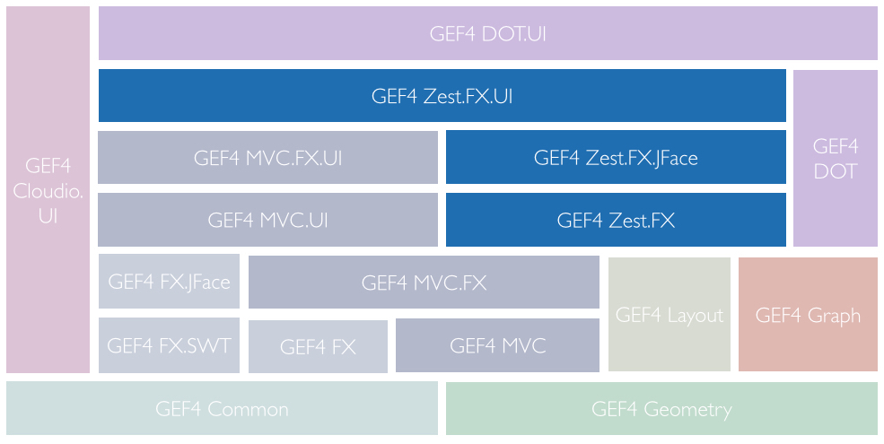
The Zest.FX module of GEF4 Zest provides a graph viewer and implements all functionality therefore. It uses JavaFX and GEF4 FX for visualization purposes and is internally based on GEF4 MVC, and can thus also be used standalone. Integrating with the Eclipse UI is realized by the Zest.FX.UI module.
Being based on GEF4 MVC, the Zest.FX module specifies a content model and provides a related controller hierarchy and corresponding JavaFX-based visualizations. Zest.FX is capable of rendering a graph with nodes, (binary) edges, and related labels. A node can contain a (nested) graph. A node visualization is composed of a shape, an icon, a label, and a compartment for nodes and edges of a nested graph (if any). It may also have an external label that can be freely placed. An edge visualization is composed of a curve and source/target decorations. It may have freely placable source label, target label, (center) label, and external (center) label.
The content model is a GEF4 Graph model of which specific attributes are recognized and utilized by Zest.FX for visualization and layout purposes. A utility class ( ZestProperties) is provided that can be used to access the visualization-related attributes. Similarly, GEF4 Layout provides a utility class ( org.eclipse.gef4.layout.LayoutProperties) that can be used to access the layout-related attributes.
Visualization-related attributes specify the to be visualized contents. The appearance is controlled via JavaFX CSS. For this purpose, CSS classes are assigned to the visuals so that an external stylesheet can be used. Additionally, a CSS class, ID, and style can be specified for a graph content element using dedicated ZestProperties.
Zest.FX provides content part implementations for the individual graph abstractions, i.e. GraphPart, NodePart, and EdgePart. Additionally, NodeLabelPart and EdgeLabelPart are provided as controllers for external node/edge labels. The label parts are anchored to their respective controllers.
In order to implement automatic layout, every content part is accompanied by an AbstractLayoutBehavior implementation that is responsible for transferring visualization-related attributes to layout-related attributes (and vice versa) within the content GEF4 Graph model: GraphLayoutBehavior, NodeLayoutBehavior, and EdgeLayoutBehavior.
Furthermore, Zest.FX provides a HidingModel that maintains a set of currently hidden nodes. The hidden nodes are neither shown, nor taken into account when performing automatic layout. AbstractHidingBehavior implementations are used to hide/show nodes in response to HidingModel changes. The behaviors also generate HiddenNeighborsFeedbackParts that indicate the number of hidden neighbor nodes. Per default, the user can hide/show nodes using dedicated hover handles, or interaction policies.
In order to navigate nested/nesting graphs, interaction policies are registered that open a nested/parent graph on double-click ( OpenNestedGraphOnDoubleClickPolicy, OpenParentGraphOnDoubleClickPolicy), and a SemanticZoomPolicy is registered that carries out zooming and scrolling interactions, so that the user can zoom into and out of (nested) graphs. The viewport of a previously opened graph is stored in the NavigationModel and restored when that graph is opened again.
Besides, a TranslateSelectedAndRelocateLabelsOnDragPolicy is registered so that nodes and labels can be relocated via mouse drag interaction.
The {Root} package provides a com.google.inject.Module ( ZestFxModule) with bindings, as well as a utility class ( ZestProperties) to work with the visualization and layout attributes/properties recognized by GEF4 Zest.
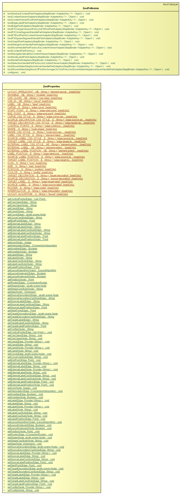
The ZestFxModule defines various (default) bindings, concerning parts, policies, etc. needed to realize the graph visualization.
ZestProperties defines attributes that are associated to graphs, nodes, and edges (of
GEF4 Graph), to control the visualization as well as the layout.
The visualization is based on the following attribute, which are associated with graphs (g), nodes (n), or edges (e):
SHAPE__N,
javafx.scene.Node (n): Stores the node that is used to display the border and background of the node.
LABEL__NE,
java.lang.String (n, e): Stores the label for the element.
EXTERNAL_LABEL__NE,
java.lang.String (n, e): Stores the external label for the element, which can be freely placed.
ICON__N,
javafx.scene.image.Image (n): The image that is displayed next to the node's label.
TOOLTIP__N,
java.lang.String (n): Text, which is shown as a tooltip, i.e. when the mouse hover the node and does not move for a short time.
CURVE__E,
javafx.scene.Node (n): Stores the node that is used to render the stroke of the edge.
SOURCE_LABEL__E,
java.lang.String (e): Stores the source label for the edge.
TARGET_LABEL__E,
java.lang.String (e): Stores the target label for the edge.
SOURCE_DECORATION__E,
javafx.scene.Node (n): Stores the node that is used to render the source decoration of the edge.
TARGET_DECORATION__E,
javafx.scene.Node (n): Stores the node that is used to render the target decoration of the edge.
CSS_CLASS__NE,
java.lang.String (n, e): Stores the CSS class that is assigned to the element.
CSS_ID__NE,
java.lang.String (n, e): Stores the CSS id that is assigned to the element.
SHAPE_CSS_STYLE__N,
java.lang.String (n): Stores the CSS style that is assigned to the shape of this node.
LABEL_CSS_STYLE__NE,
java.lang.String (n, e): Stores the CSS style that is assigned to the
javafx.scene.text.Text which displays the label of the element.
CURVE_CSS_STYLE__E,
java.lang.String (e): Stores the CSS style that is assigned to the curve of the edge.
SOURCE_LABEL_CSS_STYLE__E,
java.lang.String (e): Stores the CSS style that is assigned to the source label of this edge.
TARGET_LABEL_CSS_STYLE__E,
java.lang.String (e): Stores the CSS style that is assigned to the target label of this edge.
SOURCE_DECORATION_CSS_STYLE__E,
java.lang.String (e): Stores the CSS style that is assigned to the source decoration of this edge.
TARGET_DECORATION_CSS_STYLE__E,
java.lang.String (e): Stores the CSS style that is assigned to the target decoration of this edge.
ROUTER__E,
org.eclipse.gef4.fx.nodes.IConnectionRouter (e): Stores the router that is used to manipulate the waypoints of the edge
INTERPOLATOR__E,
org.eclipse.gef4.fx.nodes.IConnectionInterpolator (e): Stores the interpolator that is used to manipulate the appearance of the edge.
INVISIBLE__NE,
java.lang.Boolean (n,e): Stores whether this element is to be visual or not.
The layout is based on the following attributes, which are associated with graphs (g), nodes (n), or edges (e):
LAYOUT_ALGORITHM__G,
org.eclipse.gef4.layout.ILayoutAlgorithm (g): Stores the algorithm that will be used to layout the nodes and edges of this graph.
LAYOUT_IRRELEVANT__NE,
java.lang.Boolean (n, e): If set to true, this element will not get layed out.
POSITION__N,
org.eclipse.gef4.geometry.planar.Point (n) : Stores the position of the node.
SIZE__N,
org.eclipse.gef4.geometry.planar.Dimension (n): Stores the size of the node.
START_POINT__E,
org.eclipse.gef4.geometry.planar.Point (e): Stores the start point of the edge.
END_POINT__E,
org.eclipse.gef4.geometry.planar.Point (e): Stores the end point of the edge.
CONTROL_POINTS__E, List of
org.eclipse.gef4.geometry.planar.Points (e): Stores the control/way-points of the edge.
LABEL_POSITION__E,
org.eclipse.gef4.geometry.planar.Point (e): Stores the position of the label of the edge.
SOURCE_LABEL_POSITION__E,
org.eclipse.gef4.geometry.planar.Point (e): Stores the position of the source label of the edge.
TARGET_LABEL_POSITION__E,
org.eclipse.gef4.geometry.planar.Point (e): Stores the position of the target label of the edge.
The Behaviors package contains specific IBehavior implementations for exchanging layout information ( AbstractLayoutBehavior, NodeLayoutBehavior, EdgeLayoutBehavior) and the hiding/showing of nodes and related edges ( AbstractHidingBehavior, NodeHidingBehavior, EdgeHidingBehavior, EdgeLabelHidingBehavior).
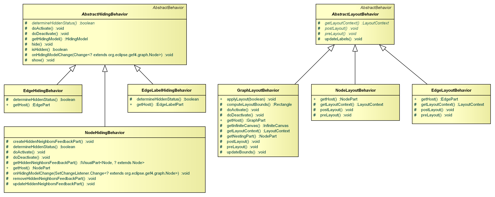
The GraphLayoutBehavior maintains a
org.eclipse.gef4.layout.LayoutContext, i.e. it is responsible for the creation of such a layout context, updating the layout bounds (based on the corresponding
GraphPart), and initiating layout passes (based on content or bounds changes). It also registers pre- and post-layout-passes at the
org.eclipse.gef4.layout.LayoutContext, including those of related NodeLayoutBehaviors and EdgeLayoutBehaviors. The NodeLayoutBehavior provides location and size of its corresponding
NodePart before a layout pass is applied, and, accordingly, copies the location and size from the
org.eclipse.gef4.layout.LayoutContext to its corresponding
NodePart afterwards. Afterwards it initiates a refresh of the visualization and updates the external label position, which is ignored by the
GEF4 Layout algorithms. The EdgeLayoutBehavior does not need to provide layout information, but only refreshes the visualization of its corresponding
EdgePart after a layout pass, as well updating the positions of external labels. The AbstractLayoutBehavior provides common functionality for all layout related behaviors.
The NodeHidingBehavior, EdgeHidingBehavior, and EdgeLabelHidingBehavior react to changes in the
HidingModel by hiding/showing the corresponding visuals. In addition, for nodes, a
HiddenNeighborsFeedbackPart is created when any neighboring nodes are currently hidden. The AbstractHidingBehavior provides common functionality for all hiding related behaviors.
The Models package provides viewer models to support hiding of nodes ( HidingModel) as well as semantic zooming ( NavigationModel).
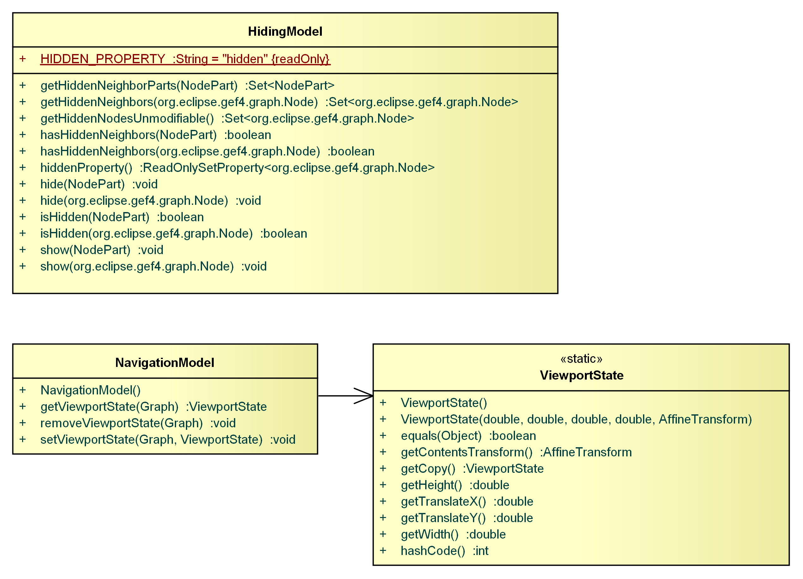
The HidingModel is a viewer model that stores which nodes are currently hidden. Every visible node shows a small marker indicating how many of its neighbors are hidden. You can hide/show nodes using the hover handles, respectively. The visualization is automatically synchronized with the HidingModel.
The NavigationModel is a viewer model needed to persist viewport configurations. It is used to keep track of all viewports that are passed during nested graph navigation when zooming in and can be used to restore viewports when zooming out again.
The Operations package currently provides operations for the hiding (visible) and showing (invisible) nodes, as well as for navigating and manipulating of attributes.
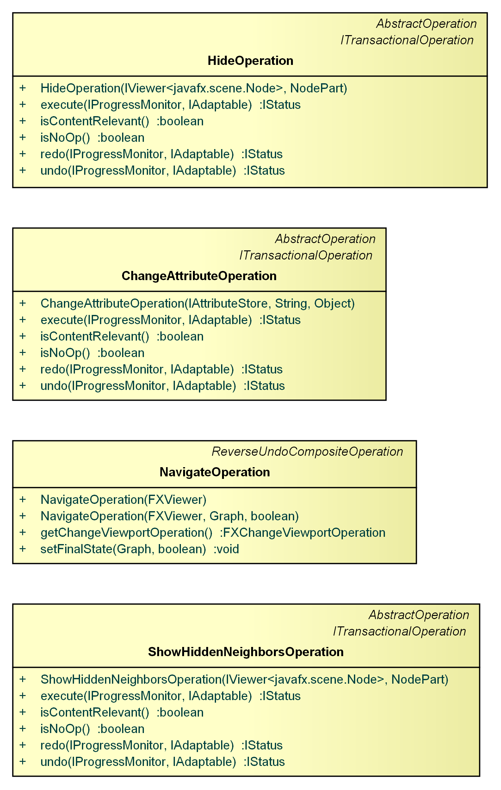
The HideOperation and ShowHiddenNeighboursOperation are used by
HidePolicy to hide or show nodes. It adds/removes a respective content part to/from the
HidingModel.
The NavigateOperation is used by the
SemanticZoomPolicy to realize navigation into and out of nested graphs.
The ChangeAttributesOperation is a general operation used to change values of attributes of an
org.eclipse.gef4.common.attributes.IAttributeStore, i.e for a
Graph model element.
The Parts package provides a specific org.eclipse.gef4.mvc.fx.parts.FXRootPart which adds support for CSS styling.
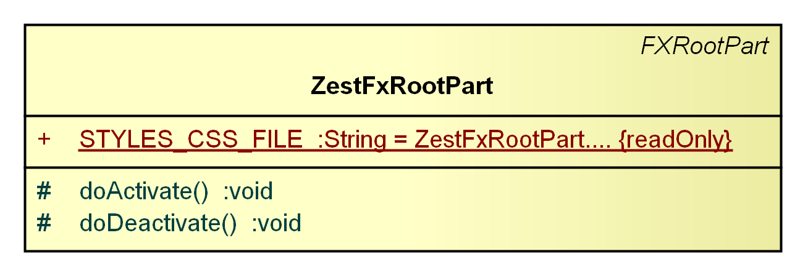
It furthermore provides specific org.eclipse.gef4.mvc.fx.parts.AbstractFXContentPart implementations ( GraphPart, NodePart, NodeLabelPart, EdgePart, and EdgeLabelPart) to control the visualizations of graphs, nodes, and edges.
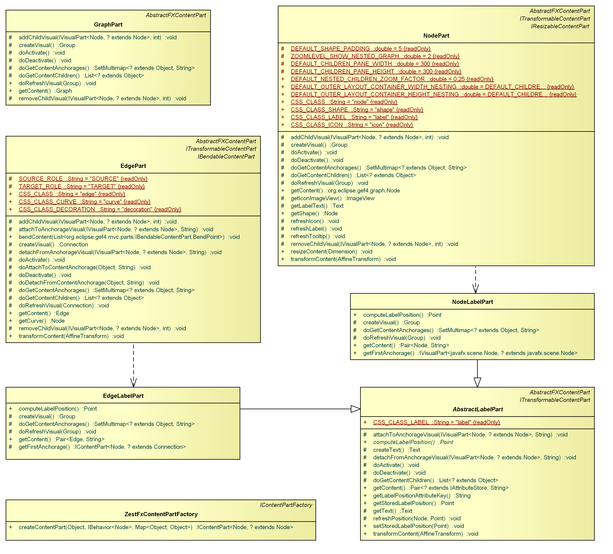
In addition, it provides specific org.eclipse.gef4.mvc.fx.parts.AbstractFXHandlePart implementations ( HideHoverHandlePart and ShowHiddenNeighborsHoverHandlePart) to realize hiding and showing of nodes via hover handles.
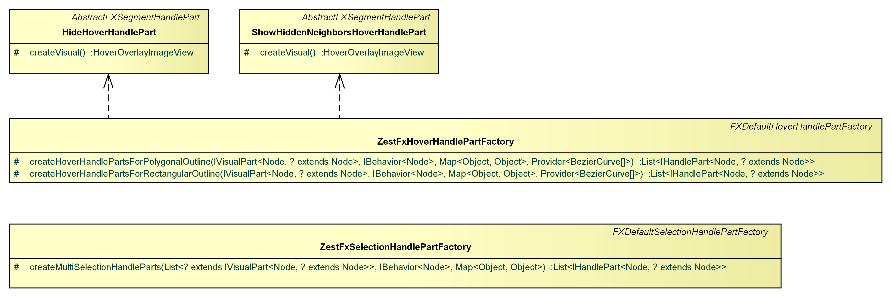
There is also specific AbstractFXFeedbackPart implementation ( HiddenNeighborsFeedbackPart) to indicate feedback for hidden nodes.
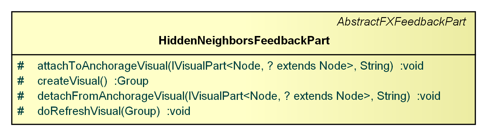
The ZestFxRootPart is a specific
org.eclipse.gef4.mvc.fx.parts.FXRootPart that adds support for CSS styling. In detail, it loads a file with default CSS styles (STYLES_CSS_FILE) and applies it as stylesheet to the
javafx.scene.Scene.
The GraphPart, NodePart, and EdgePart implementations control the visualization of the underlying
GEF4 Graph model elements, i.e. graphs, nodes, and edges. The default visualization for nodes (contributed by NodePart) consists of a shape Node for background and border, a
javafx.scene.text.Text for the label, and an
javafx.scene.image.ImageView for the icon. The default visualization for edges (contributed by EdgePart consists of a
org.eclipse.gef4.fx.nodes.Connection, whose curve node can be exchanged. The external labels of nodes and edges are visualized by
javafx.scene.text.Texts, which are controlled by NodeLabelPart and EdgeLabelPart respectively.
The NodePart and EdgePart assign the following JavaFX CSS classes to its visuals:
"node" is assigned to the visual of the NodePart."shape" is assigned to the shape sub-visual of the NodePart."label" is assigned to the label sub-visual of the NodePart."icon" is assigned to the icon sub-visual of the NodePart."edge" is assigned to the visual of the EdgePart."curve" is assigned to the curve sub-visual of the EdgePart."decoration" is assigned to the decoration sub-visuals of the EdgePart.The HideHoverHandlePart and ShowHiddenNeighborsHoverHandlePart are complementary
org.eclipse.gef4.mvc.fx.parts.AbstractFXSegmentHandlePart implementations that are used as hover handles. Being anchored on a respective
NodeParts, they react to mouse clicks to perform hiding or showing of nodes.
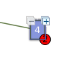
The HiddenNeighborsFeedbackPart is a specific
org.eclipse.gef4.mvc.fx.parts.AbstractFXFeedbackPart that indicates the number of hidden neighbor nodes via a circle decoration (with a number label).
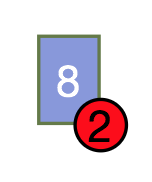
The ZestFxSelectionHandlePartFactory is a specific handle part factory that does prevent creation of multi selection handles.
The Policies package contains specific IPolicy implementations for hiding/showing of nodes ( HideNodePolicy, HideOnTypePolicy, ShowHiddenNeighborsOnTypePolicy, HideFirstAnchorageOnClickPolicy, and ShowHiddenNeighborsOfFirstAnchorageOnClickPolicy), dragging external labels ( TransformLabelPolicy, TranslateSelectedAndRelocateLabelsOnDragPolicy), and navigating nested graphs via double click ( SemanticZoomPolicy, OpenNestedGraphOnDoubleClickPolicy, OpenParentGraphOnDoubleClickPolicy).
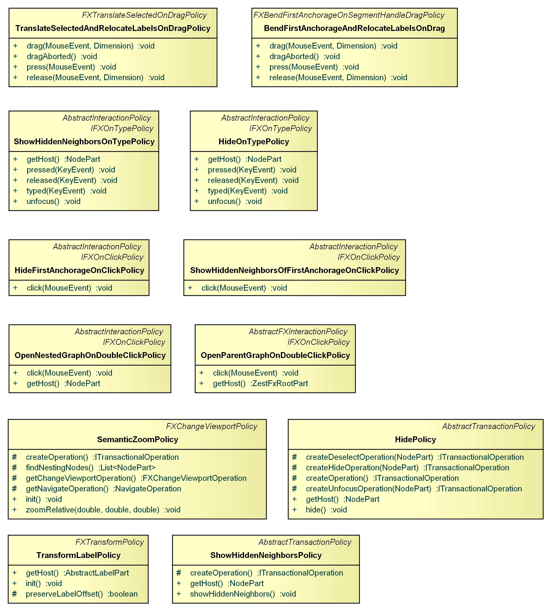
The HidePolicy and ShowHiddenNeighborsPolicy are transaction policies that are registered as an adapter on
NodeParts. They are used by the HideOnTypePolicy, ShowHiddenNeighborsOnTypePolicy, HideFirstAnchorageOnClickPolicy, and ShowHiddenNeighborsOfFirstAnchorageOnClickPolicy interaction policies to realize the hiding and showing of nodes.
The TranslateSelectedAndRelocateLabelsOnDragPolicy is a specific
IFXOnDragPolicy that enables the positioning of node and edge labels (i.e.
NodeLabelPart and
EdgeLabelPart) during mouse drag. It uses the underlying TransformLabelPolicy to realize the translate operation.
The OpenNestedGraphOnDoubleClickPolicy and OpenParentGraphOnDoubleClickPolicy policies implement nested graph navigation via double clicking with the mouse. They both rely on the underlying SemanticZoomPolicy, which manipulates the
NavigationModel via a
NavigateOperation. The graph of the node where the current graph is nested is opened when the user double clicks in the background (i.e. in a
ZestFxRootPart), and the nested graph is opened when the user double clicks in a
NodePart that contains a nested graph.
The Providers package contains a specific anchor provider for NodeParts.
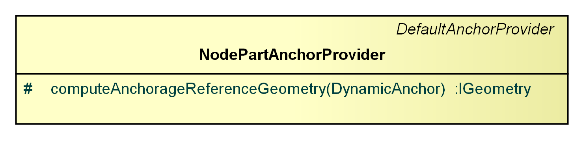
The NodePartAnchorProvider is a specific
org.eclipse.gef4.mvc.fx.providers.DefaultAnchorProvider that uses the
NodePart's shape outline.
The Zest.FX.JFace module of GEF4 Zest provides a JFace-based API to populate a Zest viewer (i.e. an FXViewer).
The Root package provides a specific org.eclipse.jface.viewers.ContentViewer ( ZestContentViewer), related content ( IGraphContentProvider, and attribute ( IGraphAttributesProvider) providers.
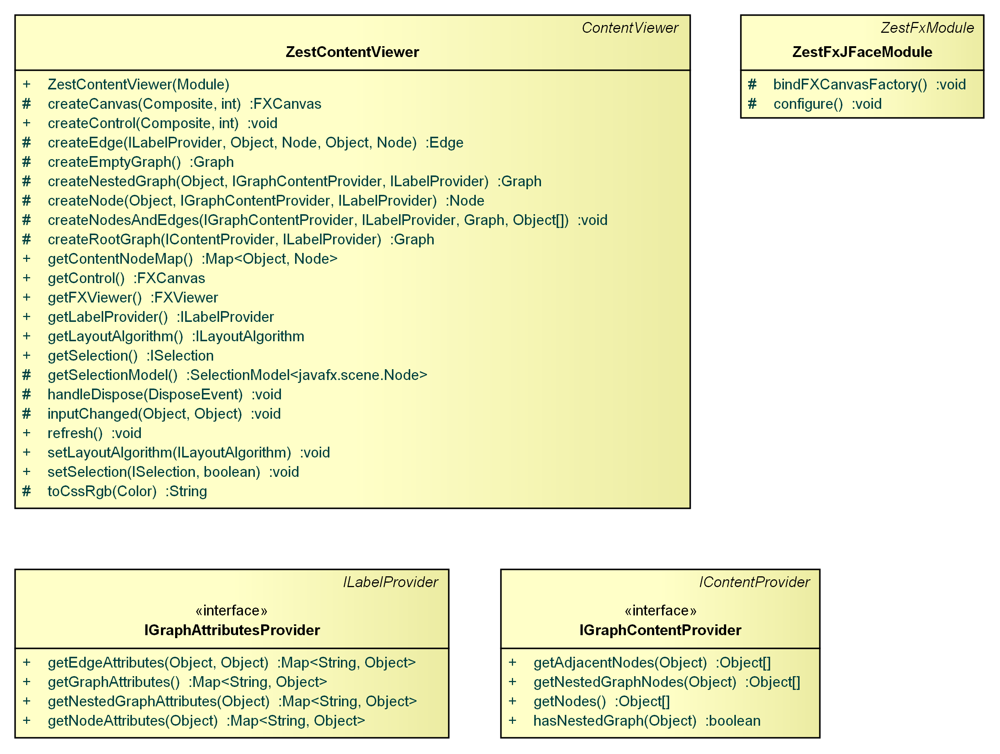
A ZestContentViewer is a specific
org.eclipse.jface.viewers.ContentViewer that renders an input model as a directed graph, using
Zest.FX.
The to be rendered graph is inferred from the input model by means of a
org.eclipse.jface.viewers.IContentProvider. In the context of a ZestContentViewer, the content provider has to implement
IGraphContentProvider. The content provider is node-based, i.e. edges are not represented as first level entities, but are only inferred from input objects via getAdjacentNodes(Object).
The visualization of the graph (i.e. of its nodes and edges) can be controlled via a
org.eclipse.jface.viewers.ILabelProvider. The getText(Object) and getImage(Object) of the label provider will be used to infer labels and icons for nodes. In case the label provider implements
org.eclipse.jface.viewers.IColorProvider, its getForeground(Object) will be used to infer the color of the node outline and its label, and getBackground(Object) will be used as the node's fill color. In case the label provider implements
org.eclipse.jface.viewers.IFontProvider, getFont(Object) will be used to infer the name, size, and style (bold or italic) of the font, used by the node label. The label provider may furthermore implement
org.eclipse.jface.viewers.IToolTipProvider in case a tooltip should be shown on hovering the node.
Further, the label provider may implement IGraphAttributesProvider, which allows to provide values for all specified ZestProperties for graphs, nodes and edges, via which the visualization can be controlled even more fine-grained. It will overwrite the values returned via the standard label and dedicated provider methods. For edges, this can for instance be used to provide label texts (using the label, external-label, source-label, or target-label attribute).
The IGraphContentProvider is responsible of returning those input elements (getNodes()) that are to be visualized as nodes, and to provide information about which nodes are connected via edges to other nodes. The IGraphContentProvider is node-based, i.e. the to be visualized edges are only represented implicitly, by providing the connection target nodes of a node via getAdjacentNodes(Object), and are not explicitly mapped to underlying input elements. It further provides information about nested graphs via getNestedGraphNodes(Object).
The IGraphAttributesProvider can be implemented by a label provider to return attributes, i.e.
ZestProperties for a root graph, as well as for nodes and edges.
The Zest.FX.UI module of GEF4 Zest contains Eclipse Workbench UI related graph visualization support. This includes a com.google.inject.Module] ( ZestFxUiModule), which augments the bindings of ZestFxModule to realize the Eclipse Workbench UI integration and an Eclipse view ( ZestFxUiView) to render graphs based on Zest.FX.
The {Root} package provides a com.google.inject.Module ( ZestFxUiModule) with bindings related to the Eclipse UI Workbench integration of Zest.FX.
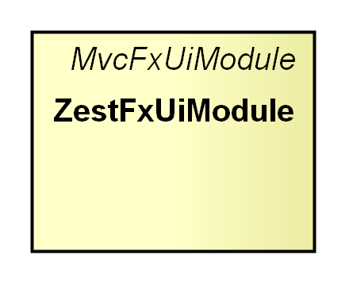
The ZestFxUiModule extends
org.eclipse.gef4.mvc.ui.MvcUiModule and thus delivers specific bindings related to the integration of
Zest.FX with the Eclipse Workbench UI.
The Parts package provides an Eclipse org.eclipse.ui.part.ViewPart ( ZestFxUiView) for visualizing graph models.
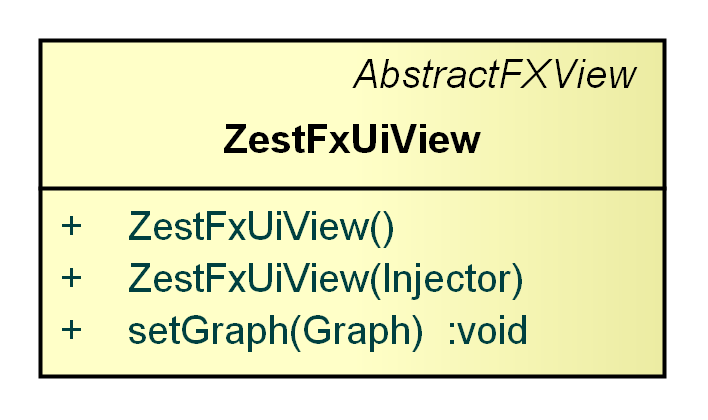
ZestFxUiView is a specific
FXView that can render graphs. It uses the bindings provided by
ZestFxModule and
ZestFxUiModule.
GEF4 Zest was mostly written from scratch, replacing the Zest 1.x API as well as the provisional Zest 2.x API ( Zest 2.0 Layout API) that was developed as an intermediate step.
The Zest 1.x API consists of two parts:
The former has been replaced by Zest.FX and the latter by Zest.FX.UI.
In comparison to the Zest 1.x Core API, which is based on SWT/Draw2d visualization and interweaves graph data, layout data, and visuals, Zest.FX is based on GEF4 MVC and maintains distinct object hierarchies for the graph data (content model), the layout data (layout model), and the visuals. As a result, in order to perform structural changes to the visualized graph, you cannot directly affect the visualization as in Zest 1.x Core, but instead modify the underlying graph model which will effect a content synchronization, i.e. update the visualization based on the content changes. Therefore, to transition from Zest 1.x Core to Zest.FX, you have to create/modify a org.eclipse.gef4.graph.Graph where previously org.eclipse.zest.core.widgets.Graph, org.eclipse.zest.core.widgets.GraphNode, and org.eclipse.zest.core.widgets.GraphConnection were created/modified.
Since Zest.FX is based on GEF4 MVC, you should be familiar with the mechanisms and concepts of GEF4 MVC, which are employed as follows:
The Zest Graph Example demonstrates best how to use the new API. The example is very simple as the rendered graph is not modified later on. However, it contains everything that is needed for a fully functional example. As you can see when taking a look into the source code, attributes are set on the graph model to specify certain visualization features such as label, tooltip, CSS id, etc. Actually, the whole visualization results from those attributes ( Visualization Properties).
Some specific Zest 1.x core functionalities are implemented differently within Zest.FX. The corresponding use case scenerios are as follows.
Many visual features can be specified via JavaFX CSS within GEF4 Zest, which would have required either a style provider or a custom figure in previous versions. The CSS styles can be applied to individual elements, or entire classes of elements. There are eight parts of the visualization which can be styled individually (defined by ZestProperties):
Within GEF4 MVC, on which Zest.FX is based, an org.eclipse.gef4.mvc.parts.IContentPart is responsible of contributing a respective visualization. You can exchange the parts provided by Zest.FX to control nodes and edges, and thereby replace their visualizations. To do so, you have to create a custom org.eclipse.gef4.mvc.parts.IContentPartFactory (e.g. by subclassing ZestFxContentPartFactory) to create different content parts.
To exchange the original
ZestFxContentPartFactory with your custom implementation, you have to overwrite the respective binding defined within
ZestFxModule. This can easily be achieved by subclassing
ZestFxModule and overriding bindIContentPartFactory(). Your custom module has to be handed into the constructor of the
ZestContentViewer, so the specified bindings are evaluated.
The JFaceCustomNodeExample demonstrates this scenario. However, be aware that colors, fonts, borders, and sizes can already be configured via JavaFX CSS and do not require a custom visualization, as outlined in Customizing Styles.
Since you cannot modify the visualization directly, you have to adjust the underlying graph model instead. The FullyMeshedLayoutExample demonstrates this scenario.
Nodes and edges can be marked as layout-irrelevant, meaning they will not get reported to layout algorithms. The FilterLayoutExample demonstrates this scenario.
Zest.FX.JFace consists of a ZestContentViewer and related specializations of org.eclipse.jface.viewers.IContentProvider and org.eclipse.jface.viewers.ILabelProvider.
In comparison to the org.eclipse.zest.core.viewers.GraphViewer provided by Zest 1.x, the ZestContentViewer is not a org.eclipse.jface.viewers.StructuredViewer, but a org.eclipse.jface.viewers.ContentViewer, which seems to be the more adequate abstraction (as a structured viewer imposes a tree-, list-, or table-based structure, which does not naturally resemble a graph).
Probably, the biggest difference between Zest 1.x and Zest.FX.JFace is related to content providers. Zest.FX defines the following ones:
getAdjacentNodes(Object) method. This is the equivalent of the
Zest 1.x
org.eclipse.zest.core.viewers.IGraphEntityContentProvider. It also covers the functionality of the
Zest 1.x
org.eclipse.zest.core.viewers.INestedContentProvider through its getNestedGraphNodes(Object) method.
Both new content providers are node-oriented, i.e. they provide content elements which represent nodes, not edges. The Zest 1.x API additionally defines an org.eclipse.zest.core.viewers.IGraphEntityRelationshipContentProvider which provides content elements that represent edges. This is not yet covered by Zest.FX.JFace.
Similar to Zest 1.x, Zest.FX.JFace is based on the default org.eclipse.jface.viewers.ILabelProvider.
Most of the custom Zest 1.x JFace providers have been replaced with the respective standard JFace providers:
The following providers have not been migrated, because their corresponding functionality is implemented by means of default GEF4 MVC mechanisms, on which Zest.FX and thus Zest.FX.JFace are based:
You can find examples on how to use the different providers in the JFace-API examples.
Basic support for zooming, which is specifically implemented within org.eclipse.zest.core.viewers.GraphViewer, is already provided as a base feature of GEF4 MVC.FX, on which Zest.FX and thus also Zest.FX.JFace are based. Within GEF4 MVC, a ViewportModel maintains a content transformation which can be modified to zoom in/out of a visualization. Zest.FX adds a semantic zoom that allows to zoom into nested graphs. That is, when zooming into a nesting node, it will - from a certain zoom level onwards - show the nested contents and will eventually replace the viewer contents with the nested graph.